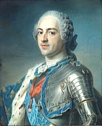

1715-1774Règne
LumièresSiècle
ÉcusArgent
Louis d'orOr
Louis XV (1715-1774) règne pendant une grande partie du siècle des Lumières. Le système monétaire de l'Ancien Régime (louis d'or, écus d'argent, monnaies de billon et de cuivre) se poursuit avec de nombreux types et reformes successives.
Les monnaies de Louis XV offrent une grande diversité de portraits et de revers. Elles forment un des ensembles les plus riches de la numismatique royale française avant les dernières émissions de Louis XVI.
Sources : catalogues Ciani, Duplessy, Gadoury · infonumis.info
Les monnaies du règne de Louis XV
'" />Dixième d'écu dit "vertugadin"
Date : 1718 ; Atelier : BB (Strasbourg) flan neuf ; 1.393.920 exemplaires
Argent 917 ‰ ; 24 mm ; 2.88g (théorique 3.059g)
Avers : LVD. XV. D. G. FR. ET. NAV. [REX (Mg)] (Louis XV, par la grâce de Dieu, roi de France et de Navarre) ; Buste enfantin de Louis XV à droite, drapé et cuirassé.
Revers : .SIT. NO[MEN.] DOMINI. - BB - .BENEDICTVM (Mm) 1718 (Béni soit le nom du Seigneur) ; Ecu rond de France couronné.
Tranche : cordonnée
Références : C.2099 L.646 G.289 Dr.529 Dy.1654
Liard au buste enfantin
Date : 1721 ; Atelier : S (Reims) ; 3.150.000 exemplaires
Cuivre ; 21 mm ; 2.54g
Avers : LUDOVICUS XV. DEI. GRATIA (Mg) (Louis XV, par la grâce de Dieu) ; Tête nue enfantine du roi à droite, au dessous (Mg).
Revers : FRANCIÆ ET - NAVARRÆ REX 1721 (roi de France et de Navarre) ; Ecu de France couronné ; différent d'atelier à l'exergue.
Références : C.2143 G.270 Dy.1694 Drs.600 L.661
Tiers d'écu de France
Date : 1722 2e semestre ; Atelier : A (Paris) flan neuf ; 2.747.520 exemplaires
Argent 917 ‰ ; 27.5 mm ; 7.93g (théorique 8.158g)
Avers : LUD. XV. D. G. FR. ET. NAV. REX. (Louis XV, par la grâce de Dieu, roi de France et de Navarre) ; Buste juvénile de Louis XV à droite, lauré et cuirassé ; (Mm) sous le buste.
Revers : SIT NOMEN DOMINI. - A - .BENEDICTVM (Mg) 1722 ; Ecu de France couronné.
Tranche : cordonnée
Références : C.2109 L.669 G.306 Dr.542
Dixième d'écu dit "au bandeau"
Date : 1740 2e semestre ; Atelier : A (Paris) ; 90.900 exemplaires
Argent 917 ‰ ; 21 mm ; 2.91g (théorique 2.948g)
Avers : LUD. XV. D. G. FR. - ET NAV. REX. (Louis XV, par la grâce de Dieu, roi de France et de Navarre) ; Tête à gauche de Louis XV, ceinte d'un bandeau ; au-dessous (Mm).
Revers : SIT NOMEN DOMINI - A - BENEDICTUM (Mg) 1740 (Béni soit le nom du Seigneur) ; Ecu de France ovale couronné, entre deux branches d'olivier ; au-dessous la lettre d'atelier.
Tranche : cordonnée
Références : C.2127 L.701 G.292 Dr.560 Dy.1683
Ecu dit "à la vieille tête"
Date : 1771 ; Atelier : L (Bayonne) ; Degré de rareté : R2
Argent 917 ‰ ; 41 mm ; 29.06g
Avers : LUD. XV. D. G. FR. - ET NAV. REX. (Louis XV, par la grâce de Dieu, roi de France et de Navarre) ; Tête âgée à gauche de Louis XV, laurée, la base du cou drapée ; au-dessous (Mm).
Revers : SIT NOMEN DOMINI - L - BENEDICTUM (Mg) 1771 (Béni soit le nom du Seigneur) ; Ecu de France ovale, couronné entre deux branches d'olivier.
Références : C.2129 L.712 S.605 G.323
Liard dit "à la vieille tête"
Date : 1770 ; Atelier : AA (Metz)
Cuivre ; 21.5 mm ; 2.95g
Avers : LUDOV. XV. - D. GRATIA (Louis XV, par la grâce de Dieu) ; Tête âgée de Louis XV à droite, laurée ; au-dessous (Mm).
Revers : (Mg) FRANC. ET - AA - NAVARR. REX. 17-70 (roi de France et de Navarre) ; Ecu de France couronné.
Références : C.2149 L.708 G.272 Dr.581 Dy.1701